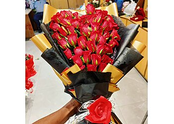
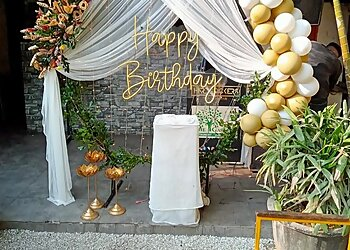

Prince Flowers
Flowers, gifts and celebrations.
A florist on Mall Road, Model Town, Jalandhar.
A bouquet says it
Roses and flower bouquets for the moments you want to mark.
To someone
worth celebrating.
Have a colour in mind? Call to ask about today's flowers and prices.
+91 88726 51111
Made for a moment
A look at the shop's public listing.
Call to confirm current designs and availability.

Find us in
Model Town
Planning a gift or a celebration?
Speak to the shop about what you have in mind.
Prince Flowers704, Shop No. 1
Mall Road, Model Town
Jalandhar, Punjab 144003+91 88726 51111
Mall Road, Model Town
Jalandhar, Punjab 144003+91 88726 51111
Contact the shop for current hours,
prices and availability.